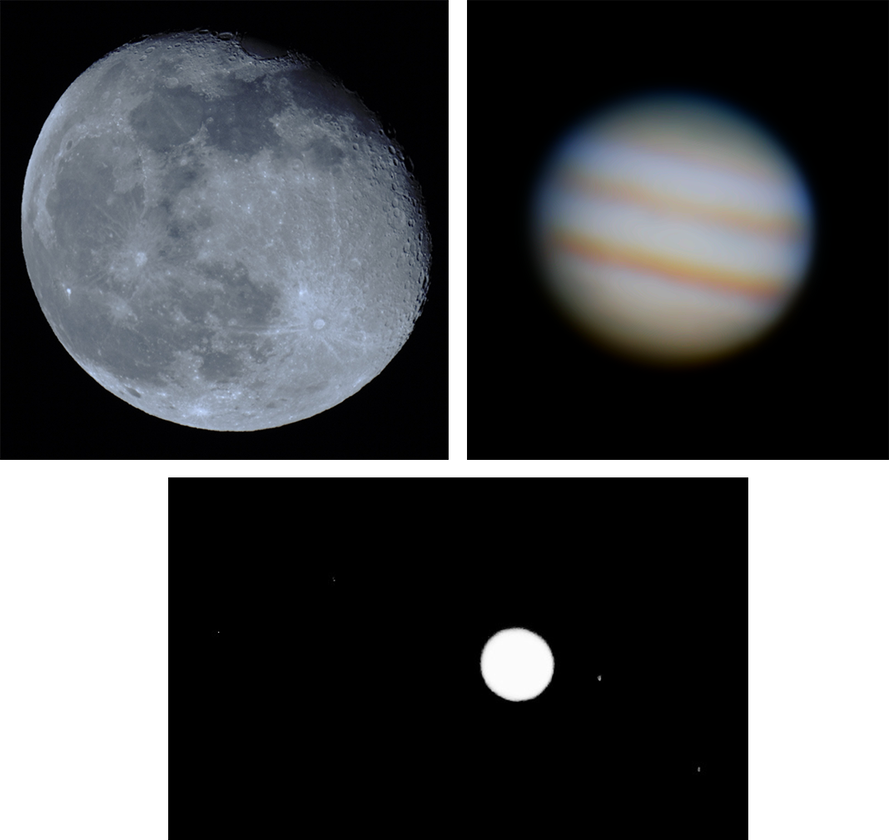

Astrophotography #3 – 11/01/2024
After getting somewhat comfortable with the basics of the telescope and camera I wanted to see if I could control the camera and mount remotely. After a quick google I found a Linux distribution called Astroberry for the Raspberry Pi, I immediately flashed it to an SD card and inserted it into my Pi 4B.
Astroberry is specifically designed for astronomy use and device control. It comes bundled with various navigation applications and facilitates remote access to your astronomy equipment. Once setup, the Pi would be connected to my local Wi-Fi network and be functioning as a remote server, the Pi will be plugged into the camera or mount, device control would be handled by an application running on the Raspberry Pi, I would then connect to the remote Pi server using my PC or phone to access the application and control my devices.
After installing Astroberry I followed an online tutorial for the setup process. All seemed well until it came to the mount control. You must manually select drivers to control the camera and mount, I googled which drivers were needed for my specific devices but unfortunately the mount drivers didn’t work. I tried multiple drivers, connecting the Pi directly to the mount, connecting the Pi to the handset, updating the handset firmware, installing a different application to handle the mount control, and finally a fresh install of Astroberry. After a lot of time spent googling, it seemed to be a common issue with my mount, and nobody seemed to have a solution.
For the time being I gave up on the mount control and decided to see if I could get the camera control set up. With the drivers installed I plugged in my camera, and it was ready to go! I decided to test the Astroberry server in the garden and I found that it was rather slow and would drop connection due to a weak Wi-Fi signal. I spent some time seeing if I could improve the connection but decided to call it quits for the time being and find another solution for camera control.
I found a popular program called Astrophotography Tool (APT). APT doesn’t require an internet connection to operate which made it perfect for my situation. APT was very quick to set up on my laptop and is feature rich. APT allows me to record in manual mode with 5x zoom which is necessary for planetary lucky imaging for my model of camera, which is very handy! The only downside is that I must take my laptop in the garden which is much larger than a Raspberry Pi.
I’m happy to have found a solution for the camera control though I aim to have another look at the mount control using a different approach in the near future. For now, I think I’ll stick to improving my astrophotography. I’ve included a collage of images of some recent astro shots and an image of APT running on my laptop.
Thanks for reading,
Jack
